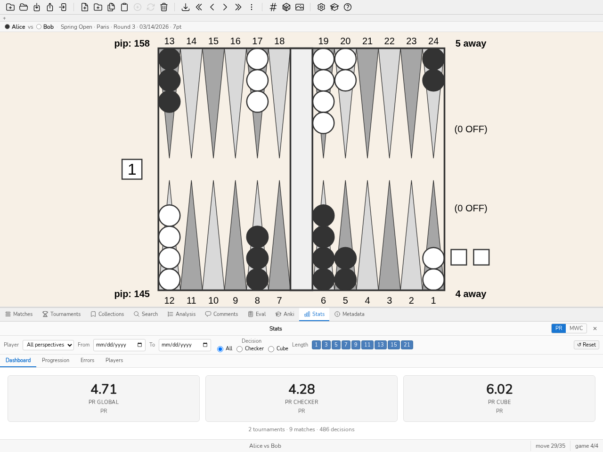

Руководство
Введение
blunderDB — программа для создания баз данных позиций нардов. Её главное преимущество — единое место для накопления позиций, с которыми игрок сталкивался (онлайн, на турнирах), и возможность их повторного изучения с фильтрацией по произвольно комбинируемым критериям. blunderDB также можно использовать для создания каталогов эталонных позиций.
Позиции хранятся в базе данных, представленной файлом .db. Настольное приложение открывает этот файл напрямую, а не сетевой адрес: серверный режим (Безголовый режим (сервер)) — это другой режим того же двоичного файла, и переход от одного к другому делается экспортом или миграцией базы, а не указанием приложению URL.
Основные взаимодействия
Основные взаимодействия с blunderDB:
добавить новую позицию,
изменить существующую позицию,
скопировать изображение доски в буфер обмена (PNG) с помощью CTRL-X или с полным анализом через CTRL-X CTRL-X,
удалить существующую позицию,
искать одну или несколько позиций,
импортировать матчи из различных источников (XG, GNUbg, BGBlitz, Jellyfish), включая комментарии из файлов XG,
навигировать по ходам импортированного матча,
организовывать позиции в коллекции,
организовывать матчи в турниры.
Пользователь может свободно присваивать позициям метки и аннотировать их комментариями.
Описание интерфейса
Интерфейс blunderDB состоит сверху вниз из:
[вверху] панель инструментов, объединяющая все основные операции с базой данных,
[по центру] основная область отображения, позволяющая отображать или редактировать позиции нардов,
[внизу] строка состояния, отображающая различную информацию о базе данных или текущей позиции и содержащая командную строку.
Панели могут быть отображены для:
отображения данных анализа текущей позиции из eXtreme Gammon (XG), GNUbg или BGBlitz,
отображения, добавления или изменения комментариев,
поиска и фильтрации позиций по комбинируемым критериям,
отображения и управления коллекциями позиций (панель коллекций),
отображения списка импортированных матчей и навигации по ходам матча (панель матчей),
отображения и управления турнирами (панель турниров),
отображения статистики производительности (панель Stats),
вычисления EPC (Effective Pip Count) позиции снятия шашек (панель Eval),
изучения позиций методом интервального повторения (панель Anki),
просматривать метаданные базы данных (панель «Метаданные»).
Модальные окна могут отображаться для:
отображения справки blunderDB,
открыть каталог обучающих туров (см. Обучающие туры и образец базы данных),
настройки экспорта базы данных,
настройки blunderDB, в том числе языка интерфейса (см. Конфигурация).
Основная область отображения предоставляет пользователю:
доску для отображения или редактирования позиции нардов,
уровень и владельца куба,
пипкаунт каждого игрока,
счёт каждого игрока,
кости для розыгрыша. Если на костях не показаны значения, положение костей указывает, чей ход, и что позиция является решением по кубу. Когда решение по кубу — это ответ на удвоение (тейк/пас), предложенный куб отображается в центре доски, на предложенном значении.
Буфер обмена — повседневный жест; сохранение — другая нужда: иллюстрация к статье, к сообщению на форуме, к уроку. SVG предлагается потому, что доска им и является: это форма, которая переживает увеличение, та, что попадает в документ без размытия. PNG производится из неё, как и копия в буфер: одна отрисовка, три назначения — значит, ни одно не может разойтись с другими. Это меню не появляется ни в панели Eval, ни в панели поиска, где правая кнопка уже расставляет шашки другого цвета. См. Перенос позиции в панель Eval о том, как перенести позицию в панель Eval.
Строка состояния структурирована слева направо следующей информацией:
командная строка, доступная при нажатии клавиши ПРОБЕЛ,
информационное сообщение, связанное с выполненной пользователем операцией,
индекс текущей позиции, а за ним число позиций в текущей библиотеке (или сведения о ходе и партии при просмотре матча),
счётчик библиотеки — «позиций 412 · бландеров 38 · матчей 5» — где каждое число открывает то, что оно считает: позиции, подготовленный в командной строке поиск
E>100или список матчей. Число, за которым нельзя пойти, — украшение. Порог бландера тот же, что в статистике, сто миллипунктов: два порога заставили бы одно слово значить два разных.
Примечание
В случае позиций, полученных в результате поиска пользователем, количество позиций в строке состояния соответствует числу отфильтрованных позиций.
Вкладка Anki несёт бейдж, когда есть карточки к повторению, по всем колодам. Это число — причина открыть вкладку; ему нечего делать за ней. Ноль не показывается: бейдж с «0» — шум.
Команда log открывает журнал работы: последние двести строк файла журнала, кнопку для их копирования — ровно то, что нужно, чтобы приложить отчёт к сообщению, — и другую, чтобы открыть содержащую их папку. Журнал не фильтруется и не переформатируется: приглаженный журнал уже нельзя процитировать.
В истории поиска панели поиска каждый токен сохранённой команды показан именованной плашкой — Без контакта, Ошибка хода — а не голым токеном. Точная команда остаётся в подсказке, ведь запускается именно она; а токен, которого blunderDB не знает, показывается как есть, а не переведённым к ближайшему.
Вкладки представлений
Под панелью инструментов панель вкладок позволяет работать с несколькими представлениями параллельно. Каждое представление — это независимое рабочее пространство, которое сохраняет собственный список позиций, индекс текущей позиции, отображаемую позицию, анализ и выбранный ход, активную панель, текущий комментарий, а также контекст навигации по матчу. Так, например, можно держать открытым поиск в одном представлении, просматривая матч в другом.
Создать представление: нажать кнопку + на панели вкладок или клавиши CTRL-T. Новое представление создаётся как копия текущего.
Закрыть представление: нажать крестик на вкладке или клавиши CTRL-W. Последнее представление закрыть нельзя.
Переключить представление: нажать на вкладку, нажать CTRL-PageUp / CTRL-PageDown (или SHIFT-J / SHIFT-K) для перехода к предыдущему / следующему представлению, либо CTRL-1–CTRL-9 для прямого перехода к n-му представлению.
Переименовать представление: дважды щёлкнуть по вкладке, ввести новое имя и подтвердить клавишей ENTER.
Представления сохраняются вместе с состоянием сессии базы данных и восстанавливаются при её повторном открытии.
Конфигурация
Кнопка настроек (значок шестерёнки) на панели инструментов, слева от кнопки справки, открывает окно настроек blunderDB. Оно разделено на шесть вкладок:
Интерфейс — язык, масштаб отображения, положение панели;
Цвета доски — цвета игровой доски;
Bearoff — таблицы bearoff, используемые панелью Eval;
gammonNet — настройки встроенного движка оценки, описанные ниже;
Отслеживаемая папка — автоматический импорт матчей, попадающих в папку, описан ниже;
Идентичность автора — ключ, которым подписываются ваши отметки происхождения; описан в разделе Распространение базы: происхождение и пароль.
Вкладка Интерфейс начинается с темы: как в системе, светлая, тёмная, высокий контраст или для печати. Тема задаёт цвета интерфейса и предлагает палитру доски — тёмный интерфейс вокруг светлой доски это не тёмная тема, а её половина, ведь доска занимает бо́льшую часть окна.
Последнее слово за вами, и механизм это гарантирует, а не обещает: вкладка Цвета по-прежнему настраивает доску напрямую, и цвет, выбранный после темы, — ваш. При запуске применяются только токены интерфейса, никогда не палитра доски: та, что вы настроили, уже загружена, и переписывать её при каждом запуске значило бы стирать вашу работу сессию за сессией. См. ADR-0038.
Как в системе — значение по умолчанию: оно подчиняется светлой/тёмной настройке рабочего стола, в том числе при её смене посреди сессии. Инструмент не навязывает свой светлый или тёмный вид рабочему столу, который уже решил.
Вкладка Интерфейс также позволяет выбрать язык: английский, французский, немецкий, итальянский, испанский, финский, японский, греческий или русский. Весь интерфейс (панель инструментов, панели, сообщения, справка) переводится на выбранный язык. Выбор языка сохраняется и переносится из сессии в сессию.
На той же вкладке есть кнопка Сжать базу, возвращающая место на диске, оставшееся после удалений (матчей, турниров, чисток): база никогда не уменьшается сама при удалении данных, сжатие нужно запросить явно. На большой базе операция может занять время и временно требует примерно вдвое больше свободного места, чем размер файла (blunderDB откажется стартовать, вместо того чтобы рисковать прерванным сжатием); поэтому перед запуском спрашивается подтверждение. Результат — сколько места выиграно, в мегабайтах — затем показывается в строке состояния. Та же операция доступна в командной строке через blunderdb vacuum (см. Интерфейс командной строки (CLI)).
Кнопка Открыть папку журналов прямо под ней открывает папку с журналом приложения — это удобно, чтобы приложить подробности к сообщению о проблеме, особенно когда blunderDB запущен из ярлыка или двойным щелчком, без подключённого терминала, который что-либо показал бы.
Флажок Проверять обновления при запуске, по умолчанию выключенный, при каждом запуске один раз обращается к странице релизов репозитория GitHub и показывает в строке состояния сообщение, если доступна более новая версия — но никогда не окно, мешающее работе. При установке через менеджер пакетов (Flatpak, Homebrew, пакет дистрибутива…) эта проверка автоматически остаётся выключенной: обновлениями тогда занимается этот канал, а не сам blunderDB.
Вкладка Цвета доски позволяет настроить цвета доски. У каждого элемента свой выбор цвета: фон, рамка, светлые и тёмные пункты, шашки игрока 1 и игрока 2, кубики, точки на кубиках и куб удвоения. Кнопка Сбросить возвращает все цвета по умолчанию. Как и язык, выбранные цвета сохраняются между сеансами.
Вкладка Bearoff управляет таблицами выбрасывания панели Eval (см. Панель Eval). Они не встроены в исполняемый файл и не загружаются: blunderDB вычисляет их на машине, которая ими пользуется, и результат побайтово совпадает с тем, что выдаёт gnubg — отпечаток SHA-256 проверяется до того, как таблица принимается.
Две обычные таблицы (TS-06-06 для решения по кубу, OS-06 для EPC) вычисляются при первом запуске, в фоне и ни о чём не спрашивая: около шести секунд на одном ядре, в течение которых приложением пользуются как обычно. Панель Eval упоминает об этом, только если в неё поставлена позиция, которой нужна ещё не готовая таблица.
Вкладка показывает активную область и её происхождение, состояние односторонней таблицы, которую читает EPC, папку, где всё это живёт, и список имеющихся таблиц с их размером и вердиктом. Каждая строка удаляется отдельно, после подтверждения.
Проверена или не проверена. Проверенная таблица имеет ровно те байты, которые gnubg производит для её области: её отпечаток SHA-256 записан в blunderDB и был найден снова. Отпечатки, записанные для односторонних таблиц (от OS-06 до OS-10), — это отпечатки, которые производит инструмент makebearoff из GNUbg 1.08. Непроверенная таблица корректна, но для её области отпечаток не записан — к ней нет претензий, просто никто не сравнивал её с эталоном. Повреждённая таблица противоречит сама себе и никогда не читается; она пересчитывается.
Вычислить более широкую таблицу. Область выбирается из списка двух семейств вместе с числом ядер (по умолчанию все, кроме одного, чтобы машина оставалась пригодной для работы):
точный куб (двусторонняя), от TS-06-06 до TS-06-15: расширяет область, где вероятность выигрыша и вердикт куба читаются, а не оцениваются;
EPC вне дома (односторонняя), от OS-06 до OS-10: расширяет расстояние, на котором может стоять шашка без того, чтобы блок EPC умолк. Этот проход читает только позиции меньше вычисляемой, поэтому он последователен по построению и число ядер ему ничего не даёт — выбор говорит это, становясь серым.
Прежде чем что-либо начнётся, вкладка называет для выбранной области три числа: размер на диске, память, нужную во время вычисления, и время, которое оно должно занять на этой машине. Последнее начинается как оценка и становится измерением: каждый достаточно широкий проход фиксирует собственную скорость и сохраняет её. Область, которую доступная память не позволяет, предлагается серой, с указанием причины — «нужно 24 ГБ, осталось 12» есть ответ, отсутствующая строка ответом не была бы.
Для порядка величины, на машине с шестнадцатью потоками: TS-06-09 весит 191 МБ и требует десятка секунд, TS-06-11 весит 1,2 ГБ и нескольких минут, TS-06-13 превышает то, что большинство машин может удержать в памяти. Со стороны односторонних, на одном ядре: OS-07 весит 4,9 МБ и требует 17 с, OS-08 — 15 МБ и 1 мин 20, OS-10 — 117 МБ и полчаса.
Пауза и продолжение. Во время вычисления прогресс показывает измеренное оставшееся время и две отдельные кнопки: Пауза и Отмена. Пауза записывает состояние вычисления рядом с таблицей; повторный запуск продолжает с места остановки, а не начинает заново. Отмена не сохраняет ничего. Закрытие окна настроек ничего не прерывает — вычисление продолжается в фоне.
Приостановленное вычисление находится при следующем запуске, названным и с числом («TS-06-09 прервана на 43 %»), с кнопками Продолжить и Удалить. Ничто не перезапускается само: остановки просил пользователь.
Наконец, вкладка позволяет указать внешний двусторонний файл .bd, например базу, произведённую самим gnubg: побеждает таблица с самой широкой областью.
Вкладка Общие несёт наконец Восстановить анализы: столбцы анализа, которые опрашивают поиск и статистика, — проекция сохранённых анализов, остающихся нетронутыми. Ошибка проекции, стало быть, исправима без повторного импорта. Это явно и никогда автоматически — переписывать чьи-то столбцы анализа лишь потому, что он открыл свою базу, инструмент не должен делать за его спиной. Та же blunderdb repair доступна в командной строке.
Вкладка gammonNet настраивает встроенный движок оценки (см. ADR-0011). В ней задаются две глубины поиска, названные и хранимые раздельно — понижение одной никогда не меняет другую:
Глубина отображения — комфорт интерактивной работы при редактировании доски; никогда не записывается в базу.
Глубина анализа — то, что пакетный анализ после импорта записывает в анализ позиции.
Обе по умолчанию равны 2-ply — канонической конфигурации. Вкладка также предлагает отсечение (по умолчанию k=12) и число отображаемых кандидатных ходов (по умолчанию 10), а также флажок автоматически анализировать после импорта, который, будучи включён, после каждого импорта проверяет, остались ли позиции без какого-либо анализа (ни gammonNet, ни XG, ни GNUbg, ни BGBlitz — правило гласит: «оценка лишь заполняет пробел», но никогда ничего не заменяет), и при необходимости запускает в фоне анализ gammonNet на настроенной глубине анализа. Кнопка Анализировать сейчас вручную перезапускает тот же догоняющий анализ — полезно для базы, созданной до появления этой функции.
Вторая кнопка, Повторно проанализировать устаревшие позиции, покрывает обратный случай: позиция, уже проанализированная gammonNet, но чей сохранённый анализ был записан более старой версией движка, чем работающая сейчас, или на глубине, отличной от настроенной выше глубины анализа, помечается там как устаревшая и переоценивается. Позиция, которая дополнительно несёт анализ XG, GNUbg или BGBlitz, никогда не затрагивается этой кнопкой, независимо от её содержимого gammonNet — защита ADR-0013 остаётся безусловной. Число, отображаемое рядом с каждой кнопкой (позиции без анализа, устаревшие позиции), носит чисто информативный характер; партия пересчитывает свой собственный список при запуске.
Обе партии ограничены, видимы и отменяемы — никакого молчаливого демона: их ход (проанализировано позиций / всего) и кнопка отмены отображаются в строке состояния всё время их выполнения и исчезают по завершении, уступая место сообщению, подводящему итог результата — сколько позиций было проанализировано, сколько было отклонено (позиция, которую gammonNet отказывается оценивать, например, счёт матча за пределами диапазона его таблицы, что никогда не является сбоем) и сколько не удалось (повторяются без изменений при следующем запуске). Закрытие приложения во время того или другого ничего не теряет: каждая проанализированная позиция записывается по мере готовности, а следующий запуск возобновляет анализ ровно с того места, где он остановился, без какого-либо журнала.
Матч, импортированный без анализа, теперь получает PR. Это случай матча, сыгранного онлайн, или файла Jellyfish .mat, который никто не пропускал через XG: blunderDB знал его позиции и сыгранные ходы, но никакой анализ не говорил, чего они стоят. После прогона фактически сыгранный ход сравнивается с ранжированием gammonNet, и разница питает PR, долю ошибок, худшие решения и все прочие показатели — ровно так же, как у матча, разобранного в XG. Сравнение ничего не выдумывает: сыгранный ход берётся из таблицы ходов самого матча, записанной при импорте, независимо от того, нёс ли файл анализ.
Базу, проанализированную более ранней версией, не нужно переоценивать: blunderdb repair пересчитывает столбцы по уже сохранённым анализам и ходам и возвращает этим матчам их PR (см. repair).
Честная оговорка: позиция определяется своей структурой, поэтому позиция, встреченная дважды — раз сыгранная хорошо, раз плохо — несёт только одну разницу, разницу первого записанного вхождения. Это не особенность данного расчёта: библиотека XG устроена ровно так же.
Отслеживаемая папка
Вкладка Отслеживаемая папка просит blunderDB во время работы следить за папкой и импортировать каждый файл матча, который в ней появляется. Сыграть сессию в eXtreme Gammon, вернуться в blunderDB — и матчи уже там.
Ничего не угадывается. Пока папка не указана, слежения нет: blunderDB не начинает читать каталог оттого, что предположил, где живут ваши матчи. Кнопка Предложить смотрит обычные места на этой машине и предлагает путь только если он действительно существует; иначе она об этом говорит, и указать папку — ваше дело.
Три вещи стоит знать, прежде чем поставить галочку:
Импортируются только появляющиеся файлы. То, что папка уже содержит в момент запуска слежения, записывается как известное и не трогается: направив слежение на четыре года матчей, не следует импортировать их все. Чтобы импортировать то, что уже есть, используйте импорт папки, который для этого и существует, — и эти два прекрасно складываются: сначала импорт, потом слежение.
Файл импортируется лишь тогда, когда его размер устоялся. Матч, который пишет другая программа, растёт от взгляда к взгляду; импорт недописанного дал бы ошибку разбора, с которой никто ничего не сделает. Поэтому blunderDB ждёт, пока увидит один и тот же файл дважды неизменным.
Импорт проходит тихо. Вы разбирали позицию, когда пришли ваши матчи: отобрать у вас экран было бы худшим моментом. Импорт идёт без окна, а в строке состояния появляется полоса со счётом импортированных, пропущенных (дубликаты) и неудавшихся матчей и кнопкой, открывающей полный отчёт, если он вам нужен. Всё остальное совпадает с ручным импортом: те же обнаруженные дубликаты, тот же пакет импорта, тот же автоматический анализ, если он включён.
Интервал по умолчанию — десять секунд; нижний предел — две. Папка не обходится рекурсивно: отслеживаемая папка — это место, куда инструмент кладёт свои матчи, а не дерево для обхода. Отмонтированный сетевой ресурс не останавливает слежение и не выдаёт своё содержимое за новое при возвращении.
То же слежение доступно в командной строке: blunderdb import --type batch --dir <папка> --watch (см. Интерфейс командной строки (CLI)) — это форма, которой могут пользоваться сервер, планировщик или скрипт.
Окно конфигурации также содержит настройки отображения интерфейса. Ползунок масштаба интерфейса позволяет увеличить или уменьшить все элементы интерфейса, что полезно на экранах высокой плотности или для улучшения читаемости. Меню расположения панелей определяет, где панели (поиск, матчи, анализ) располагаются относительно доски: снизу, сбоку или автоматически (тогда на широких экранах выбирается боковое расположение, чтобы лучше использовать доступное пространство). Как и другие настройки, эти выборы сохраняются от сеанса к сеансу.
Обучающие туры и образец базы данных
Чтобы облегчить освоение, blunderDB предлагает обучающие туры по интерфейсу. Каталог туров открывается с панели инструментов или командой tour (псевдоним tutorial). Доступны семь туров: общий тур по интерфейсу, а также туры, посвящённые поиску позиций, разбору матчей, разбору турниров, панели Eval, повторению Anki и статистике. Каждый тур пошагово выделяет соответствующие элементы интерфейса, попутно открывает панель, о которой рассказывает, и может быть повторён в любой момент. При первом запуске общий тур предлагается автоматически.
Команда demo загружает образец базы данных, позволяющий познакомиться с возможностями инструмента, не импортируя собственные партии: три матча (два из них объединены в турнир), проанализированные eXtreme Gammon, BGBlitz и gammonNet, три тематические коллекции, комментарии с тегами (#blunder, #cube) и колоду Anki с журналом повторений. Игроки, турнир и место вымышлены. Экскурсии по интерфейсу опираются на эту базу, когда ни одна база не открыта.
Редактирование позиций
Нажатие клавиши TAB открывает панель поиска и позволяет редактировать позицию на доске для добавления в базу данных или для задания структуры позиции для поиска. Распределение шашек, куб, счёт и право хода можно изменять с помощью мыши (см. Редактирование позиции).
Совет
Смотрите Горячие клавиши для доступных горячих клавиш.
Командная строка
Командная строка, встроенная в строку состояния, позволяет выполнять все функции blunderDB, доступные в графическом интерфейсе: общие операции с базой данных, навигация по позициям, отображение анализа и/или комментариев, поиск позиций по фильтрам… После первоначального освоения интерфейса рекомендуется постепенно использовать командную строку для мощной и плавной работы с blunderDB, особенно для функций поиска позиций.
Для открытия командной строки нажмите клавишу ПРОБЕЛ. Для отправки запроса и закрытия командной строки нажмите клавишу ENTER.
blunderDB выполняет запросы пользователя при условии их корректности и немедленно изменяет состояние базы данных при необходимости. Явное сохранение пользователем не требуется.
Совет
Смотрите список команд для списка команд, доступных в командной строке.
Панель анализа
Панель Анализ (CTRL-L) отображает данные анализа текущей позиции, импортированные из eXtreme Gammon (XG), GNUbg или BGBlitz. Отображаются лучшие альтернативы (ходы шашками или решения куба) с их значениями эквити и соответствующими ошибками. Клавиша d переключает между анализом ходов шашками и анализом куба. При навигации по матчу фактически сыгранный ход выделяется в списке альтернатив. Нажмите CTRL-L или выполните команду list для отображения или скрытия панели.
Под таблицами иногда появляется фраза, говорящая, чего стоило сыгранное решение и почему: «Вы теряете 120 mMWC: сыгранный ход оставляет три блота там, где 13/7 8/7 оставляет только один.» Она порождается шестью измеримыми правилами — открытость, сделанный или упущенный пункт дома, отданные шансы на гаммон, безопасность, которая стоит дороже, чем даёт, и два направления ошибки по кубу (дубль слишком поздно или слишком рано, слишком свободное взятие или слишком тесный пас).
Главное правило — молчание: фраза появляется, только когда правило применимо уверенно, и при ошибке выше порога, начиная с которого движки согласны, что это ошибка. В остальное время фразы нет — ни пустой рамки, ни «мы не знаем». Неверное объяснение стоит дороже, чем его отсутствие: оно учит неточному.
Когда позицию оценили несколько движков, полоса в верхней части панели ставит их рядом: по строке на движок, с его глубиной и его ответом — вердиктом по кубу или его собственным лучшим ходом. Сначала она говорит, согласны ли они, и оправдывает её именно расхождение: «XG говорит удвоение, приём; gammonNet говорит без удвоения» читается с одного взгляда там, где раньше приходилось сличать две таблицы по диагонали.
Лучший ход движка — это лучший ход этого движка: список кандидатов отсортирован по эквити вперемешку по всем движкам, поэтому его первый элемент ни для кого в отдельности не лучший.
Полоса появляется, только если движков действительно несколько, и существует лишь в этой панели: панель Eval показывает одно решение — встроенного движка (ADR-0017), и сравнению там не место.
Ходы записываются так, как они читаются на доске, здесь так же, как в панели Eval: наименее продвинутая шашка ходит первой, и шашка, использующая подряд несколько костей, записывается только один раз — 64, сыгранное одной и той же шашкой, читается 24/14, а 24/14*, если она бьёт по прибытии. Подробности цепочки появляются вновь лишь тогда, когда они говорят что-то ещё: удар по пути сохраняет свой промежуточный пункт, 24/18* 18/14, иначе удар на 18 исчез бы из записи.
Эквити импортированного анализа подчиняется тому же правилу, что и панель Eval: столбец указывает свой референциал — «Equity (money)» или «Equity (match)» — в зависимости от счёта анализируемой позиции, а не просто «Equity» без указания шкалы. Правила Jacoby и Beaver, действующие на позиции money game, также отображаются в виде значков под таблицей решения по кубу.
Панель комментариев
Панель Комментарии (CTRL-P) показывает, добавляет и редактирует комментарии, связанные с текущей позицией. Позиция может нести несколько: показываются все, от самого нового к самому старому. Комментарии, импортированные из файлов XG, автоматически связываются с соответствующими позициями. Нажмите CTRL-P или выполните команду comment, чтобы показать или скрыть панель.
Каждый комментарий, пришедший из файла, несёт метку происхождения (XG, GNU BG, BGF или импортировано, когда происхождение не было записано). Комментарии, написанные вами, метки не несут: это обычный случай, и помечать каждую строку было бы шумом. Правка импортированного комментария делает его вашим: после правки фраза — ваша.
Это различие видно и в другом месте: удаление матча больше не уничтожает позицию, на которой писали вы. Заметка, взятая из исходного файла, по-прежнему исчезает вместе с матчем, который её принёс.
Корзина
Удаление позиции, коллекции или комментария теперь проходит через корзину: удаление действительно происходит, но копия исчезающего хранится тридцать дней. Команда trash открывает окно со списком, где у каждой записи есть Восстановить и Удалить.
Восстановленная позиция возвращается со своим анализом и комментариями — вернуть её голой было бы восстановлением лишь по названию. Она не возвращается под старым номером: исходной строки больше нет, и blunderDB сохраняет её заново по отпечатку, что гарантирует отсутствие дубликата, но даёт новый идентификатор. Коллекция возвращается со своим списком; позиции, которые она содержала, никогда не удалялись — коллекция есть вид на них.
Всё старше тридцати дней удаляет команда vacuum, а не открытие базы: не делать vacuum — значит хранить всё.
Примечание
Корзина не путешествует. Экспорт её не несёт, и удаление матча ничего в неё не кладёт: чистка осиротевших позиций, следующая за удалением матча, — автоматическая уборка, а не жест пользователя; см. правило хранения в Панель матчей.
Панель поиска
Панель Поиск (CTRL-F или TAB) фильтрует позиции по свободно комбинируемым критериям: структура шашек, тип решения куба, величина ошибки, даты, метки и т.д. Клавиша TAB одновременно открывает панель поиска и редактор позиций, позволяя задать структуру шашек непосредственно на доске.

Панель Поиска: числовые фильтры, структура шашек на доске, вкладки Не менее / Кроме.
Для уточнения поиска среди текущих отфильтрованных позиций используйте команду ss с фильтрами (напр.: ss nc, ss E>40). Панель поиска также предлагает флажок Поиск в текущих результатах для той же функциональности.
Панель предлагает явное управление искомым типом решения: Безразлично (без фильтра), Шашки (решения по ходу) или Куб (решения по кубу). Когда выбран Куб, второй список уточняет подтип: Все, Дабл / Без дабла (игрок на ходу должен решить, удваивать ли) или Тейк / Пас (ответ на удвоение соперника). Управление синхронизировано с доской: изменение костей или куба на доске обновляет тип решения, и наоборот. В режиме Тейк / Пас куб отображается в центре доски на предложенном значении; это значение остаётся редактируемым.
Фаза игры — дебют, миттельшпиль, гонка, снятие шашек — это метка, которую blunderDB вычисляет по одной только доске. Она никогда не редактируется и доступна для поиска через маркер командной строки ph: (ph:race, повторяемый: ph:race ph:bearoff). Три из четырёх её границ — те, что GNU Backgammon использует для выбора своих сетей; четвёртая, где заканчивается дебют, — соглашение blunderDB: позиция всё ещё в дебюте, пока ни одна из сторон не сдвинула более четырёх шашек с исходных пунктов, ни одна не снята и ни одна не стоит на баре.
Примечание
Метку пересчитывает команда blunderdb repair. В базе, открытой впервые этой версией, расчёт делается один раз, при открытии. База, фазы которой никогда не вычислялись, не возвращает ничего для ph: — ничего, а не ложный ответ.
Команда like отвечает на другой вопрос, чем токены: она заменяет просматриваемый список позициями, ближайшими к текущей, от самой близкой к самой далёкой. Близость — это транспортное расстояние в шашко-пипсах, то есть объём движения шашек, разделяющий две позиции, и точка зрения всегда игрока на ходу. Это не фильтр: сходство упорядочивает всю библиотеку, а не сужает её, и потому не сочетается с токенами.
Токен n считает встречи: n>3 оставляет позиции, к которым ведут более трёх ходов, по всем матчам. Это другой вопрос, чем «где я ошибся» — позиция, встреченная двадцать раз и сыгранная верно девятнадцать, всё равно та, которую надо знать назубок. Считаются ходы, а не матчи: одна и та же позиция дважды в матче считается дважды, потому что это были два решения.
Фраза словами может заменить токены — команда ask: ask my cube blunders at a score. Фраза переводится в токены, записанные в командную строку: их читают, затем запускают. Ничего не угадывается и ничего не покидает машину: словарь фиксирован, одна и та же фраза всегда даёт один и тот же запрос, а то, что не понято, называется, а не обходится молчанием. Неверный перевод виден до того, как вернёт неверные результаты, а токены выучиваются при чтении.
Два намерения не являются токенами и задаются на доске поиска, а не в строке: «куб» или «ход» (род решения) и «при счёте» или «money». ask задаёт их там.
План игры — вторая производная метка, рядом с фазой, и она отвечает на вопрос, который набор сохранённых фильтров задать не может: «покажи мои ошибки в холдинг-гейме». Токен gt:, повторяемый (gt:holding gt:mutualholding), с точки зрения игрока на ходу — того плана, в котором принималось решение.
Десять распознаваемых планов, в порядке, в каком правила их разбирают, от самого частного к самому общему:
race— самые задние шашки обеих сторон разошлись: контакт больше невозможен. Граница GNU Backgammon.bearin— игрок на ходу заводит шашки домой, пока соперник ещё держит якорь в его доме.crunch— у игрока на ходу не более шести шашек вне его пунктов 1 и 2. Правило GNU Backgammon, порог его автора.backgame— два и более якоря в доме соперника.acepoint— единственный якорь, на первом пункте соперника, при отставании не менее двадцати пипсов.blitz— сделано три и более пункта дома, и соперник на баре или с блотом под удар в этом доме.primevprime— обе стороны держат прайм не менее чем из четырёх пунктов, и у каждой есть шашка, запертая за праймом другой.mutualholding— обе стороны держат высокий якорь.holding— игрок на ходу держит высокий якорь, соперник — нет.contact— контакт, и ни один из планов выше. Дебют попадает сюда.
Три из этих правил — собственные правила GNU Backgammon, и у них есть источник; остальные — соглашения blunderDB. Литература по нардам описывает планы игры, не назначая чисел их границам, и для этой задачи не опубликовано ни одного измерения согласия между классификаторами. Поэтому пороги без источника — три пункта дома для блица, четыре пункта для прайма, двадцать пипсов отставания для ace-point game — записаны здесь, а не спрятаны в коде, и они версионированы: измените их, запустите blunderdb repair, и вся база будет размечена заново.
Примечание
На позицию сохраняется одна метка — метка игрока на ходу. Производная метка никогда не редактируется, никогда не экспортируется как истина, и база, планы которой ни разу не вычислялись, ничего не возвращает по gt: — так же, как по ph:.
Фильтр Отмеченная оставляет позиции, которые вы отметили в исходной программе матча. Эту информацию создаёт только eXtreme Gammon, записывая её ход за ходом в файл .xg; blunderDB читает её при импорте и сохраняет. Отмеченное решение по кубу даёт две отмеченные позиции — дабл и тейк/пас, поскольку blunderDB разделяет надвое то, что исходный файл записывает как одно решение.
Примечание
Отметка не действует задним числом: матчи, уже находящиеся в базе, не содержат этой информации, поскольку она существует только в исходных файлах. Достаточно повторно импортировать соответствующий файл .xg — импорт обнаружит дубликат и не добавит ничего, кроме отметок, не затрагивая существующие комментарии и анализы. Отметку нельзя ни поставить, ни снять из blunderDB: для временного рабочего списка используйте лучше коллекцию.
Фильтр Комментарий обращается к комментариям, привязанным к позициям, в трёх взаимоисключающих режимах. содержит текст ищет одно или несколько слов в тексте комментариев (поле ввода, слова разделяются знаком ;, достаточно совпадения одного); есть комментарий оставляет любую позицию с комментарием, независимо от его содержания; без комментария оставляет, напротив, позиции без аннотаций — удобно в сочетании с фильтром по ошибке или дате, чтобы составить список того, что осталось прокомментировать.
Примечание
Комментарии, импортированные из файла матча (XG, GNUbg), считаются комментариями. Чтобы оставить только свои, добавьте маркер co:user в командной строке (co:xg, co:gnubg, co:bgf и co:unknown называют остальные источники). Впрочем, комментарии, привязанные к матчу или турниру, здесь ни при чём: они комментируют матч или турнир, а не его позиции.
Фильтр Матчи и турниры опирается на общий селектор (модальное окно), а не на ввод числовых идентификаторов: два списка с флажками — один для матчей и один для турниров, каждый из которых можно фильтровать по тексту (игрок, дата, событие — для матчей; название, дата, место — для турниров), с кнопками Все / Ничего, действующими только на текущее отфильтрованное подмножество. Установка флажка турнира автоматически отмечает (и делает неактивными) его матчи-участники в списке матчей, наглядно показывая, что турнир эквивалентен множеству своих матчей.
Панель поиска содержит три вкладки на левом крае: Recherche (фильтры), Historique и Enregistrés. Вкладка Historique перечисляет прошлые поиски с их датой и командой: щелчок выбирает поиск и показывает связанную позицию на доске, двойной щелчок выполняет его повторно. Каждую запись можно сохранить в библиотеку фильтров (значок закладки, задав имя фильтру) или удалить. Вкладка Enregistrés содержит библиотеку фильтров: дважды щёлкните по сохранённому фильтру, чтобы заново выполнить соответствующий поиск (см. Приложение: Расширенное использование фильтров). Команда history (псевдоним hi) открывает панель поиска.
Совет
Смотрите список команд для списка доступных фильтров.
Панель коллекций

Панель Коллекций: название, число позиций, описание, дата последнего изменения.
Панель Коллекции (CTRL-B) позволяет управлять коллекциями позиций. Коллекции можно создавать, переименовывать и удалять. Позиции можно в них добавлять и убирать (клавиша Del, спрашивается подтверждение). Двойной клик по коллекции даёт пройти её позиции клавишами ВЛЕВО и ВПРАВО. Порядок коллекций и позиций внутри коллекции меняется перетаскиванием. Нажмите CTRL-B или выполните команду collection, чтобы показать или скрыть панель.
Импорт: что записывается, а что — никогда
Импорт матча, позиции или другой базы добавляет то, чего не хватает; он не заменяет того, что уже есть.
Позиция никогда не дублируется. Её узнаёт её идентичность — шашки, куб, кости, счёт, — а не файл, из которого она пришла: одна и та же позиция, встреченная в двух матчах, остаётся одной строкой.
По одному анализу на движок. eXtreme Gammon, GNUbg, BGBlitz и встроенный оценщик уживаются на одной и той же позиции, и панель Анализа указывает происхождение каждого из них. Импорт одного не стирает другой.
Импортированный анализ никогда не пересчитывается. blunderDB укладывает его как есть, с его меткой уровня («3-ply», «XG Roller++», «Book»), его эквити, ошибками, вероятностями и удачей броска. Правило таково: «оценка лишь заполняет пробел» — автоматический анализ после импорта посещает только позиции, не имеющие никакого анализа, а Повторно проанализировать устаревшие позиции оставляет нетронутой любую позицию с импортированным анализом (см. Конфигурация).
Повторный импорт того же файла ничего не переписывает. Матч распознаётся как уже присутствующий; добавляются только метки, поставленные в исходной программе, без изменения комментариев и анализов.
Чего blunderDB не записывает никогда: пересчитанную удачу — она читается из исходного файла либо остаётся неизвестной — и роллаут, данные которого он не открывает в файле
.xgи который не умеет производить.
Подборка может быть живой: её содержимое — уже не собранный вручную список, а результат поиска, пересчитываемый при каждом открытии. Кнопка ◇ в заголовке подборки делает её живой по последнему выполненному поиску; ◈ говорит, что она уже такова, и та же кнопка возвращает ей список. Ничего не разрушается: позиции, которые она содержала, останутся на месте при возврате.
Живая подборка, чей запрос несёт токен, которого эта версия уже не знает, отказывается открываться и говорит об этом, вместо того чтобы вернуть всю базу. Это единственная поломка, которой не должно быть у сохранённого фильтра: молча расшириться.
Панель матчей
Панель Матчи (CTRL-Tab) содержит список импортированных матчей. Дважды щёлкните на матче (или нажмите ENTER) для навигации по его ходам. Команда m возобновляет навигацию по последнему посещённому матчу.
Пользователь может:
просматривать ходы матча с помощью клавиш ВЛЕВО и ВПРАВО,
переключаться между партиями с помощью клавиш PageUp и PageDown,
отображать анализ ходов (шашки и куб) нажатием CTRL-L,
переключаться между анализом ходов шашками и куба клавишей d,
видеть фактически сыгранный ход, выделенный в анализе.
Последняя посещённая позиция в каждом матче запоминается и восстанавливается автоматически. Нажмите CTRL-Tab или выполните команду match для отображения или скрытия панели.
Кнопка ⊕ в строке дополняет этот матч из файла. За ней нет ничего нового: повторный импорт того же матча в другом формате уже дополняет его на месте — каноническая свёртка узнаёт, что это тот же матч, и анализы и комментарии второго файла дополняют первый. Кнопка добавляет лишь то, что её находят: никто не догадывается, что импорт — это ещё и дополнение. Следующий отчёт говорит, что именно произошло: «дополнено: 1», а не «импортировано: 1».
Каждый матч можно экспортировать в транскрипцию Jellyfish .mat с помощью кнопки ⬇ в списке матчей или кнопки .mat в карточке матча.
Кнопка Объединить игроков на панели инструментов этой панели открывает окно со списком всех имён игроков в базе и числом их матчей: выберите варианты написания одного и того же игрока, укажите каноническое имя для сохранения, затем объедините. Полезно для унификации статистики по игроку, когда один игрок фигурирует под несколькими именами.
Когда матч открыт, над доской появляется информационная панель: она напоминает об играющих сторонах (игрок 1 против игрок 2), а также о контексте матча (событие, место, раунд, дата и длина матча, если эти сведения доступны). Эта панель отображается и вне режима матча: когда изучаемая позиция (полученная из поиска, коллекции или прямого доступа) происходит из одного или нескольких матчей, она указывает её происхождение — первый соответствующий матч и, при необходимости, бейдж «+N», перечисляющий остальные при наведении. Позиция, импортированная отдельно и не связанная ни с одним матчем, ничего не показывает.
При открытии базы данных, содержащей матчи, панель Матчи отображается сразу же, а разбор начинается прямо с первой позиции, чтобы можно было немедленно приступить к навигации.
Примечание
Базу данных можно открыть на запись только в одном окне одновременно. Если вы открываете базу, уже открытую в другом окне blunderDB, она открывается в режиме только для чтения: навигация, поиск и анализ остаются возможными, но любые изменения отключены, а в строке заголовка отображается «[только чтение]».
Совет
Смотрите Горячие клавиши для доступных горячих клавиш.
Панель турниров

Панель Турниров: один турнир на строку, число матчей, PR эталонного игрока.
Панель Турниры (CTRL-Y) группирует матчи в турниры для организованного отслеживания и статистического анализа по событиям. Турниры можно создавать, переименовывать и удалять; матчи можно назначать им. Статистика панели Stats может фильтроваться по турниру. Нажмите CTRL-Y для отображения или скрытия панели.
Турниры заполняются сами при импорте. Файлы XG, GnuBG и BGF называют своё событие; при импорте нового матча blunderDB относит его к турниру с этим именем и создаёт турнир, если его ещё нет. Дата и место турнира остаются пустыми — здесь они и заполняются. Матч, уже находящийся в базе, никогда не переносится: повторный импорт его файла не отменяет расстановку, сделанную вручную.
Столбец PR каждого турнира показывает PR основного игрока — то есть игрока, участвующего в наибольшем числе матчей турнира (при равенстве — того, кто принял больше решений). Таким образом, PR не смешивает вашу игру с игрой соперников: для ваших собственных турниров он отражает только вашу результативность. Имя основного игрока показывается во всплывающей подсказке при наведении на значение.
Панель Stats
Введение
Панель Stats позволяет анализировать уровень игры и отслеживать прогресс во времени на основе позиций, импортированных в базу данных. Вычисляет и отображает PR (Performance Rating) и MWC cost (Match Winning Chance cost) для всех позиций или отфильтрованного подмножества.
Панель Stats особенно полезна для:
определения своего уровня относительно полос уровня (Мировой класс, Эксперт, Продвинутый…) с помощью общего PR;
отслеживания прогресса от турнира к турниру или от матча к матчу с помощью графиков вкладки Progression;
выявления слабых мест: вкладка Erreurs отображает соотношение ходов шашками и решений куба, а также распределение величин ошибок;
сравнивать игроков базы между собой, по строке на игрока, во вкладке «Игроки» — удобно, когда следишь за целым турниром;
прямого перехода к соответствующим позициям щелчком по любому показателю (drill-down).
Открытие панели
Для открытия панели Stats:
Нажмите CTRL-D.
Введите команду
statsилиstв командной строке.
Примечание
Панель автоматически обновляется при каждом изменении фильтра. При простом переключении PR ↔ MWC статистика не пересчитывается: обе метрики вычисляются одновременно на стороне сервера.
Панель фильтров
Панель фильтров в верхней части панели позволяет ограничить вычисление подмножеством позиций.
Перспектива игрока
Выпадающий список Игрок фильтрует статистику для анализируемого игрока. blunderDB автоматически выбирает игрока, имя которого наиболее часто встречается в базе данных — можно изменить в любой момент.
Совет
Смена игрока не приводит к потере данных; достаточно повторно выбрать предыдущего игрока в списке.
Доступные фильтры
Турнир(ы) — ограничение одним или несколькими турнирами. Можно одновременно выбрать несколько турниров.
Даты — временной диапазон (От … До). Если указана только начальная дата, включаются более поздние позиции.
Тип решения — Все / Ходы шашками / Решения куба.
Длина матча — ограничение конкретными длинами матча (1, 3, 5, 7, 9, 11, 13, 15, 21 очко). Можно комбинировать несколько длин.
Кнопка Reset сбрасывает все фильтры (кроме автоматически определённого игрока).
Примечание
Фильтры сохраняются в конфигурации blunderDB (config.yaml) и восстанавливаются при следующем запуске.
Переключение PR / MWC
Кнопка PR / MWC в верхней части панели переключает отображаемую метрику во всех вкладках.
PR (Performance Rating)
Средняя ошибка эквити на одно засчитанное решение, умноженная на 500, как это делают eXtreme Gammon и GNUbg: PR, равный 5,0, соответствует потере 0,010 эквити на решение, то есть 10 миллипунктам (mpt). Точное правило подсчёта — какие решения попадают в знаменатель, как преобразуется счёт — это правило Приложение: Модель статистики — выравнивание XG / gnuBG / blunderDB.
Полосы уровня, которые панель рисует за кривой прогресса, — это ориентир, принятый в самом blunderDB: ни одна публикация не устанавливает эти пороги авторитетно. Верхняя граница каждой полосы не включается: PR, равный 4, — это Продвинутый, а не Эксперт.
Уровень
PR
Мировой класс
< 2
Expert
2 – 4
Продвинутый
4 – 6
Средний
6 – 9
Любитель
9 – 12
Начинающий
≥ 12
MWC cost (Match Winning Chance cost)
Накопленная вероятность победы в матче, утраченная из-за ошибок, по всему отфильтрованному набору данных. Вычисляется с использованием MET Kazaross-XG2, встроенной в blunderDB.
Осторожно
MWC cost не применяется к позициям money-game (без ставки матча). Эти позиции исключаются из вычисления MWC. Значения MWC зависят от используемой MET; они не сопоставимы напрямую между программами, использующими разные MET.
Переключение PR ↔ MWC мгновенное: перерасчёт на стороне сервера не выполняется.
Отчёт в HTML
Кнопка Отчёт HTML в заголовке панели создаёт самодостаточный документ: один файл, без внешних изображений, без удалённых стилей, без скриптов. Диаграммы — встроенный SVG, нарисованный тем же движком, что и доска на экране, с вашей палитрой. Он открывается в любом браузере, уходит по почте и печатается в PDF самим браузером — что избавляет от встраивания генератора PDF ради того, что и так есть у всех.
В нём — показатели текущего объёма (позиции, матчи, учтённые решения, общий PR, PR ходов и куба), затем десять самых дорогих решений, каждое со своей диаграммой, стоимостью, матчем, откуда оно взято, и лучшим ходом, если анализ его даёт.
Отчёт несёт текущий фильтр панели статистики. Отчёт, не называющий свой объём, — это отчёт, цифры которого ничего не значат: настройте фильтр — турнир, диапазон дат, игрока — прежде чем его создавать.
Вкладка Dashboard
Вкладка Dashboard даёт сводный обзор ключевых показателей.
{kind=link}

Вкладка Dashboard: общий PR, PR по шашкам, PR по кубу.
Карточки уровня
Три карточки отображают PR (или MWC) для:
PR Общий — все решения (ходы + куб);
PR Шашка — только сыгранные ходы;
PR Куб — только решения по кубу.
Щелчок по карточке загружает в панель анализа позиции соответствующего подмножества (drill-down).
Примечание
Общее количество решений отображается внизу каждой карточки при наведении.
Скользящий PR за последние N решений
Строка значений PR (или MWC), вычисленных по последним N решениям (N = 5, 10, 50, 100, 250, 500, 1000), позволяет оценить последнюю тенденцию. Серые значения соответствуют N, превышающему количество доступных решений.
Щелчок по значению загружает соответствующие последние N позиций.
Топ грубых ошибок
Список 10 худших ошибок (или MWC cost), отсортированных по убыванию величины. Щелчок по строке загружает соответствующую позицию в панель анализа.
Вкладка Progression
Вкладка Progression показывает динамику уровня игры во времени.
В начале вкладки — цель: «PR < 5 за двенадцать недель». Цель, срок и тенденция, говорящая, куда вы идёте, — и ничего больше. Цель, которая начала бы оценивать, поздравлять или напоминать, была бы другой функцией, не этой.
Кнопка Предложить подсказывает цель исходя из текущего уровня: нижнюю границу вашей полосы, то есть вход в следующую. Предлагать «чуть лучше» было бы ни к чему не привязано; предложить ступень — уже что-то: переход из среднего в продвинутый виден и о нём можно рассказать.
Тенденция — это подгонка методом наименьших квадратов по PR ваших матчей, спроецированная на срок. Она отказывается высказываться менее чем по трём матчам: провести прямую между двумя точками значило бы утверждать то, что не удержишь. И фраза говорит это каждый раз — тенденция не есть предсказание.
Цель хранится в метаданных базы, а не в конфигурации: она относится к этой библиотеке и потому следует за файлом, а не за машиной. Схема не меняется: metadata уже таблица ключей и значений, читаемая и blunderdb info, и демоном.
График по турнирам
Линейный график отображает PR (или MWC) для каждого турнира (ось X: порядок турниров, ось Y: значение метрики). Цветные полосы обозначают пороги уровня.
Щелчок по точке графика открывает контекстное меню с двумя вариантами:
Открыть турнир — открывает турнир в панели Tournois.
Открыть позиции — загружает все позиции турнира в панель анализа.
Диаграмма рассеяния по матчам
Диаграмма рассеяния представляет каждый матч (ось X: дата, ось Y: PR или MWC). Размер точки пропорционален количеству решений в матче.
Щелчок по точке открывает контекстное меню:
Открыть партию — открывает матч в панели матчей.
Открыть позиции — загружает все позиции матча в панель анализа.
Вкладка Erreurs
Вкладка Erreurs разбивает источники ошибок.

Вкладка Errors: распределение PR по действиям с кубом.
Разбивка по действиям куба
Столбчатая диаграмма отображает PR (или MWC) для каждого типа решения куба: NoDouble, DoubleTake, DoublePass, TooGood. Каждый столбец также показывает количество решений и долю грубых ошибок в подсказке.
Щелчок по столбцу загружает позиции, соответствующие этому действию куба, только те, в которых была ошибка (drill-down).
Направление ошибок с кубом
Разбивка выше говорит, сколько стоят решения по кубу; эта таблица говорит, в какую сторону они ошибаются.
Позиция с кубом несёт два решения, принимаемые двумя разными игроками; здесь они показаны двумя строками:
Предложить — игрок, владеющий кубом, даблит или нет. Его ошибки — упущенные даблы (надо было даблить) и преждевременные даблы (не надо было).
Ответить — игрок, которому предлагают куб, берёт или пасует. Его ошибки — ошибочные пассы (правильный тейк был спасован) и ошибочные тейки (правильный пасс был взят).
Две строки намеренно разделены: игрок вполне может доблить поздно и брать широко, а единый показатель назвал бы это «сбалансированным», потеряв обе половины сведений.
В каждой ячейке — число решений; всплывающая подсказка даёт суммарно потерянную эквити. Щелчок по ячейке загружает соответствующие позиции. Ячейка с нулём не кликабельна.
Примечание
Эта таблица считает решения, а не выносит суждения. С какого расхождения тенденцию стоит называть тенденцией, зависит от объёма выборки и от точки отсчёта, а это не данные движка.
Сравнение Checker / Cube
Сравнительная диаграмма размещает рядом PR ходов шашками и решений куба. Щелчок по столбцу загружает позиции подмножества с ошибкой.
Гистограмма величин ошибок
Гистограмма распределяет ошибки по их величине в миллипунктах (mpt, диапазоны: 0–5, 5–10, 10–25, 25–50, 50–100, ≥ 100). Щелчок по столбцу загружает позиции данного диапазона.
Вкладка Разбивки
Вкладка Разбивки делит те же решения, что считают общие цифры, по четырём осям. Ни одна из них не переопределяет, что считается решением: это был бы второй PR под тем же именем.
По фазе игры — дебют, миттельшпиль, гонка, снятие шашек. Именно это отвечает на «мой PR в гонке против моего PR в контакте». Метка вычисляется по доске (см. Панель поиска); база, фазы которой никогда не вычислялись, относит всё к Не классифицировано, и
blunderdb repairеё заполняет.По плану игры — гонка, блиц, якорь, бэкгейм, прайм против прайма… Это та разбивка, ради которой классификатор и существует: «где я теряю больше всего?», план за планом. Та же производная метка, что и фаза, те же оговорки, и
blunderdb repairзаполняет её так же.По метке —
#слово, написанные в комментариях. Позиция может нести несколько: эти строки не складываются в итог, и панель говорит об этом под таблицей. Метка характеризует, она не разбивает на части.По счёту — недостающие очки обеих сторон, прочитанные со стороны ходящего, то есть со стороны того, кто решает. Строка Money — игра на деньги. Ячейка менее чем с десятью решениями показана серым, с видимым количеством, а не скрыта: слишком мало, чтобы читать, но пропуск остаётся проверяемым.
Примечание
Партия Кроуфорда не выделяется: blunderDB не записывает этот признак у позиции. Практический эффект невелик — в партии Кроуфорда вообще нет решений по кубу, — но пропуск реален, и его лучше записать, чем оставить на догадку.
Учёба и реальная игра
Команда blunderdb list --type study --days 30 ставит рядом три числа, план за планом: сколько различных позиций было повторено за период, каким был PR до него, каков PR с тех пор.
Три числа, и никакого четвёртого. Нет ни колонки выигрыша, ни стрелки, потому что здесь ничто ни на что не контролируется: игрок мог встретить более сильных соперников, сменить формат или просто сыграть больше гонок в этом месяце. Сопоставление — дело читателя; колонка, объявляющая эффект, утверждала бы причинность, которой эти данные не несут. Сами же числа точны.
Повторения считаются в различных позициях: карточка, повторённая четыре раза за месяц, — это одна изученная позиция, а счёт повторений превратил бы месяц зубрёжки в месяц охвата. Решения же PR считаются все — каждое было принято один раз. PR, опирающийся менее чем на десять решений, показывается как —, с видимой рядом выборкой.
Вкладка «Игроки»
Четыре предыдущие вкладки описывают одного игрока; вкладка Игроки сравнивает всех. Она показывает по строке на каждого игрока базы, что отвечает потребности организатора, следящего за целым турниром, а не за одним игроком.

Вкладка Players: одна строка на игрока, сортируемая по любому столбцу.
Столбцы по порядку:
Столбец |
Значение |
|---|---|
Игрок |
Имя в том виде, в каком оно записано в матчах. Игрок, записанный в двух написаниях, поэтому занимает две строки; чтобы их свести, воспользуйтесь слиянием игроков. |
Матчи |
Число матчей, сыгранных в выбранный период. |
П–Пр |
Победы и поражения. Незавершённый матч (обрезанный журнал, отказ от игры) не идёт ни в те, ни в другие: П + Пр может быть меньше числа матчей. |
Решения |
Число учтённых решений — знаменатель PR. Именно этот столбец говорит, чего стоят соседние показатели: PR, посчитанный по двенадцати решениям, не значит ничего. |
PR |
Общий Performance Rating. |
PR шашек, PR куба |
PR в разбивке по типу решения. |
Snowie |
Snowie Error Rate (см. Приложение: Модель статистики — выравнивание XG / gnuBG / blunderDB). |
Бландеры |
Число грубых ошибок (не менее 0,100 EMG). |
Удача |
Средняя удача за бросок, в миллипунктах (mpt), со знаком: положительная, если кости благоволили. |
Использование:
Сортировка — щёлкните заголовок столбца. Таблица открывается отсортированной по возрастанию PR, лучший игрок сверху. Игроки, у которых ничего не измерено, остаются внизу при любом направлении сортировки: ноль по причине отсутствия данных — не безупречная игра.
Открыть подробности игрока — щёлкните строку. Игрок выбирается в панели фильтров, а отображение переключается на вкладку Dashboard.
Ограничить период — фильтры дат, турниров и длины матча работают как обычно, что позволяет ограничить таблицу днями соревнования.
Примечание
На этой вкладке список Игрок и выбор типа решения отключены: таблица показывает всех игроков и уже разносит решения по шашкам и по кубу в отдельные столбцы.
Важно
Прочерк («—») означает величину, которая никогда не измерялась, и её не следует путать с нулём. Так, в частности, обстоит дело со столбцом «Удача» для любого матча, импортированного до версии схемы 2.15.0: тогда удача не сохранялась, и восстановить её задним числом нечем — нужно импортировать исходные файлы заново. Форматы, которые её не переносят (BGF, Jellyfish .mat), не дадут её никогда.
Правило агрегации
Важно
PR турнира (или любого подмножества) вычисляется по правилу сумма/сумма — никогда как среднее PR отдельных матчей.
Формула:
Пример: игрок проводит два матча в турнире —
Матч A: 10 решений, потеряно 0,100 эквити → PR = 5,0
Матч B: 90 решений, потеряно 0,540 эквити → PR = 3,0
Наивное среднее PR: (5,0 + 3,0) / 2 = 4,0 (неверно)
Правило сумма/сумма: 500 × 0,640 / (10 + 90) = 3,2 (верно)
Правило сумма/сумма — единственное, которое корректно учитывает различную длину матчей (матч до 21 очка весит больше, чем матч до 1 очка).
MWC: ограничения
MWC cost вычисляется по MET Kazaross-XG2, де-факто эталонной таблице в соревновательных нардах. Результаты не сравнимы напрямую с программами, использующими другие MET. Это та же таблица, читаемая через ту же точку входа, которой встроенный оценщик пользуется для своих решений по кубу при матчевом счёте: статистика и движок не могут здесь разойтись. Она даёт собственные значения до 25 очков, которые осталось набрать каждой стороне; дальше она продолжается таблицей Zadeh, вычисляемой так же, как у GNUbg, вплоть до 64.
Позиции money-game (без счёта матча) исключаются из вычисления MWC. Если ваша база данных содержит много позиций money-game, MWC cost может быть занижен или недоступен.
MWC cost является накопительным по всему отфильтрованному набору данных — не показателем на решение. Он измеряет суммарное влияние ваших ошибок на шансы победы.
Панель Eval
Панель Eval (CTRL-E) оценивает в реальном времени любую позицию на доске; на позиции выбрасывания она специализируется и дополнительно вычисляет EPC (Effective Pip Count). Она открывается нажатием CTRL-E, щелчком по вкладке Eval нижней панели или командой epc. Эта команда сохраняет своё первоначальное имя: панель называлась EPC, затем Bearoff, прежде чем стать Eval, — так что именно здесь следует искать то, что прежние версии называли панелью Bearoff, ведь это имя теперь обозначает лишь вкладку настройки таблиц выбрасывания.
Панель всегда показывает единственное решение, которого требует выставленная на доске позиция — никогда два сразу, — и сопутствующие факты. Каждая величина читается в подходящей ей оси, а не в единой навязанной: вероятность выигрыша, гаммона, бэкгаммона и cubeless-эквити каждого игрока, вычисленные до броска, читаются по игрокам (нижний, верхний, затем Δ), слева от решения по кубу, пока кости не выставлены. Факты и решение остаются рядом: решение по кубу никогда не уходит под цифры, которые его обосновывают, каковы бы ни были язык интерфейса и позиция на доске. Как только кости выставлены, те же значения до броска меняют ось: они читаются для игрока на ходу, во главе списка кандидатных ходов, в виде строки курсивом до броска — не ещё один кандидатный ход, а ориентир, относительно которого читается каждый ход. Разница между этой строкой и ходом содержит удачу броска, а не заслугу хода, и потому не несёт столбца ошибки. На позиции чистого bearoff вторая таблица, всегда по игрокам и всегда присутствующая, с выставленными костями или без, содержит EPC, пипкаунт, wastage, среднее число бросков и стандартное отклонение; эти пять столбцов никогда не мигрируют. Обе таблицы расположены одна над другой и разделяют общую сетку столбцов: те же границы, те же ориентиры столбцов, единственный столбец цветных точек — они читаются как один объект в два этажа. Значок режима, указание движка (там же показана глубина последней оценки) и флажок Вызов образуют отдельную полосу, выровненную по правому краю над таблицами.
Прокручивается только список кандидатных ходов — строка до броска тоже остаётся закреплённой над ним; остальная часть панели (факты, значок, решение по кубу) всегда видна, без особой настройки размера панели.
Таблица фактов и решение вычисляются gammonNet, встроенным в приложение, без XG и gnubg. Расчёт следует за позицией, никогда не замораживая интерфейс: глубина 0-ply отображается сразу при каждом действии, затем, после полсекунды неподвижности, более глубокая оценка (2 ply по умолчанию, настраивается на вкладке gammonNet конфигурации) заменяет её в фоне — любое новое действие отменяет этот фоновый расчёт. Глубина, показанная в полосе значков или внутри значка режима на гоночной позиции, всегда та, что действительно дала показанное число, а не запрошенная; она не повторяется в каждой строке, поскольку живая оценка использует одну и ту же глубину для всех ходов. Эквити кандидатных ходов и решения по кубу следует счёту позиции: в money game она выражается в пунктах, при счёте матча — в нормализованной эквити, той же шкале, что у XG и GNU Backgammon, где выигрыш текущей стоимости куба равен +1, а проигрыш −1, — и они никогда не смешиваются в одной таблице. Заголовок столбца прямо называет её, вместо того чтобы оставлять шкалу угадывать: «Equity (money)» в money game, «Equity (match)» при счёте матча. Она учитывает живой куб: поиск оценивает каждую конечную позицию через модель куба (Яновский, измеренная эффективность) в состоянии куба данной позиции — так же, как это делают XG и GNU Backgammon в cubeful-оценке. Именно это делает видимыми при счёте эффекты gammon-go и gammon-save — при 4-away/2-away отстающий игрок играет 8/2 6/2 на открывающем 6-4, потому что его ранний дабл придаст гаммону цену матча — то, чего оценка без куба увидеть не может. Строка до броска, напротив, остаётся cubeless-эквити: это факт о позиции, а не решение. Эта панель никогда не изменяет базу: это расчёт, а не сохранённый анализ. Щелчок по кандидатному ходу показывает его на доске стрелками, точно как в панели анализа. Неброская кнопка ? в полосе значков ведёт в репозиторий движка gammonNet; полное указание авторства (сеть Strehl, конфигурация gammonNet) приведено в разделе «Благодарности» справки.
Пользователь редактирует расположение шашек на всей доске, точно как в режиме редактирования: левый щелчок ставит шашку нижнего игрока, правый — шашку верхнего. Вторая таблица, таблица гонки, появляется только тогда, когда полученная позиция — чистый bearoff (все шашки обоих игроков в своих домах); на любой другой позиции отвечает только таблица с четырьмя общими столбцами (выигрыш, гаммон, бэкгаммон, cubeless), а решение касается шашек или обобщённого куба в зависимости от того, выставлены ли кости.
В каждой таблице фактов — по строке на игрока, обозначенной его цветной точкой, чёрный игрок всегда снизу. Первая содержит, пока кости не выставлены, выигрыш, гаммон, бэкгаммон (вероятности, без знака %) и cubeless-эквити игрока; вторая, на позиции bearoff и независимо от того, выставлены ли кости, — EPC, пипкаунт, wastage (разницу между EPC и пипкаунтом), среднее число бросков и стандартное отклонение. Когда у обоих игроков есть значения для сравнения, строка Δ показывает знаковые разности (нижний − верхний: отрицательные, когда чёрный игрок впереди). Вне гоночной позиции выставление костей, таким образом, убирает сами таблицы фактов: четыре столбца, которые они несли, только что сменили ось — на игрока на ходу, во главе списка ходов.
Решение по кубу всегда имеет одну и ту же форму, откуда бы ни взялись цифры — из точной таблицы, рассчитанного режима или обычной оценки gammonNet: по строке на вариант, в порядке без дабла, дабл/тейк, дабл/пас, с его эквити в системе отсчёта позиции и отрывом от лучшего варианта. Порядок никогда не меняется, в отличие от списка ходов: у трёх вариантов есть имена, поэтому читают имя, а не ранг. Лучший узнаётся по выделению и по пустой ячейке отрыва. Если куб уже был передан, варианты читаются как без редабла, редабл/тейк, редабл/пас.
Последняя строка даёт вердикт. Он принимает четыре значения: без дабла, дабл, тейк, дабл, пас и слишком хорошо для дабла; последнее — когда разыгрывать позицию выгоднее, чем забрать очко: дабл тогда был бы ошибкой по причине, обратной простому без дабла. Это также единственное место, где панель говорит, что вердикта нет, вместо того чтобы создавать впечатление идущего расчёта:
нет решения — режим не имеет на него права; вердикт по кубу никогда не оценивается приближённо (см. значок оценка);
не оценивается при этом счёте — движок отказывается от позиции, как правило, из-за счёта за горизонтом таблицы матчевых эквити, то есть когда одной из сторон осталось набрать больше 64 очков;
куб у соперника и куб не в игре (Кроуфорд) — куб нельзя передать. Эквити по-прежнему отображаются, для справки, но ни у одного варианта нет отрыва: ошибка — это цена выбора, а выбора здесь нет.
В money game правила Jacoby и Beaver, действующие на позиции, отображаются под таблицей куба в виде небольших значков рядом с вердиктом, который они меняют: вердикт «без даблинга» для позиции по правилу Jacoby — это не тот же расчёт, что без него, и ничто другое на экране об этом не говорило.
Третий бейдж, Макс. куб, появляется, когда исходный идентификатор ограничивает куб — как при счёте матча, так и в money game. Он не описывает расчёт, показанный выше: встроенный оценщик не моделирует потолок, поэтому вердикт относится к свободному кубу. Именно поэтому бейдж и нужен: ограниченный куб — единственная видимая причина, по которой blunderDB и eXtreme Gammon могут вынести два разных вердикта об одной и той же позиции.
Значок режима, глубина оценки, ссылка на движок и флажок Вызов образуют отдельную полосу, выровненную по правому краю над таблицами.
Игрок на ходу и позиция куба редактируются прямо на доске, как в режиме редактирования: щелчок по прямоугольнику снятия/счёта игрока передаёт ему ход; щелчок по кубу переключает по кругу: в центре → у нижнего → у верхнего (правая кнопка мыши — в обратном порядке). Значение куба остаётся закреплённым — в money game эквити выражаются в единицах текущего куба, важен только его владелец. Анализ пересчитывается немедленно. В режиме оценки сам значок кликабелен и открывает непосредственно вкладку Bearoff конфигурации; его подсказка объясняет почему (вердикт по кубу не поддаётся оценке, ADR-0009) и как расширить точную область.
Счёт тоже редактируется прямо на доске, как в режиме редактирования: левый щелчок по прямоугольнику счёта игрока уменьшает число очков, которые ему осталось набрать, правый — увеличивает. Выход из money-счёта (-1, -1) редактированием только одной стороны автоматически выравнивает другую сторону на то же значение, вместо того чтобы оставить несогласованный счёт. На позиции bearoff в точном режиме переход от money-счёта к счёту матча оставляет вероятность выигрыша как есть (чтение из базы, верное в любой системе отсчёта), но переключает показанные эквити и вердикт по кубу на значения рассчитанного режима — точная таблица по построению money и не умеет отвечать на вопрос, заданный при счёте матча. Значок тогда становится составным («точно (победа) · рассчитано (куб)»), чтобы сказать об этом явно.
Наконец, кости редактируются тем же способом, и именно они определяют, какой вопрос задаётся: выставленные кости дают решение о ходе шашками (список кандидатных ходов), отсутствие костей — решение куба. Левый клик по кости увеличивает её значение (6 переходит в 1), правый клик уменьшает его (1 переходит в 6); клик по кости на доске, где костей нет, выставляет сразу две — одна кость не была бы ни решением о ходе шашками, ни решением куба. Клик по прямоугольнику игрока убирает кости, чтобы задать вопрос куба, а следующий клик по кости возвращает их такими, какими они были.
BACKSPACE или двойной щелчок вне доски стирает позицию: пустая доска, money-счёт (-1, -1), кости не выставлены — значения, свойственные панели Eval и отличные от используемых в режиме редактирования (7 у обоих, кости 3-1), чтобы оставаться согласованными с тем, что панель показывает по умолчанию.
Матрица куба
Решение о кубе — не свойство доски. Те же шашки и тот же счёт пипсов удваиваются при 2-away/4-away и не удваиваются при 4-away/2-away; тот, кто выучил ответ для money, выучил одну клетку сетки. Панель Eval показывает клетку, которую несёт позиция; матрица куба показывает всю сетку.
Команда cm открывает её для показанной позиции. Каждая клетка даёт вердикт при одном счёте: строка — сколько очков ещё нужно игроку на ходу, столбец — сколько нужно сопернику. Четыре вердикта записываются как БУ (без удвоения), УП (удвоение, приём), УО (удвоение, отказ) и СХ (слишком хорошо); клетка, от которой движок отказался, помечена вопросительным знаком и при наведении объясняет причину, а также показывает три эквити клетки. Предлагаются три длины матча: 5, 7 и 9 очков.
Счёт самой позиции заменяется счётом каждой клетки; её куб сохраняется. Сетка отвечает на вопрос, при каком счёте стоит повернуть этот куб, а не на то, как играла бы позиция с центральным кубом. Она всюду построена для положения после Кроуфорда: в игре Кроуфорда куб не используется, и столбец «удваивать нельзя» ничего не сказал бы о позиции.
Каждая клетка — отдельный поиск. Движок учитывает счёт — при 2-away он играет не ту же партию, что при 7-away — поэтому единственный поиск, прочитанный через разные матчевые эквити, был бы неверен именно там, где счёт важен. Сетка сначала появляется на 0-ply, а затем пересчитывается на настроенной глубине отображения, когда окно приходит в покой: то же нарастание, что и в остальной части панели; сетка на 9 очков стоит около полутора секунд.
Ту же сетку можно вычислить вне интерфейса командой cubematrix командной строки.
Перенос позиции в панель Eval
Панель по умолчанию открывается на позиции bearoff, но изучение чаще всего начинается с уже имеющейся позиции. Перенести её туда можно двумя способами:
Правый щелчок по доске в панели анализа или при навигации по матчу, затем Оценить эту позицию: панель Eval открывается прямо на этой позиции, в том виде, в каком она показана. Контекстное меню не появляется в панели Eval и в панели поиска, где правая кнопка уже служит для выставления шашек другого цвета.
CTRL-C, затем CTRL-V: скопировать позицию из панели анализа, затем вставить её один раз в панели Eval. Вставка принимает и идентификатор из другого источника — XGID (eXtreme Gammon, GNU Backgammon, другой экземпляр blunderDB) или OGID (OpenGammon): достаточно, чтобы он был в буфере обмена.
Команда
import XGID=…(илиimport OGID=…) — для случая, когда идентификатор не в буфере обмена, а в сообщении, на форуме, читаемом в терминале, или получен от скрипта. Это тот же глагол, что и простоimport: без аргумента он открывает выбор файла, с аргументом — читает идентификатор. Дальше путь тот же, что и при вставке: то же чтение, та же дедупликация, то же открытие импортированной позиции.
OGID несёт только позицию: ни оценки, ни комментария. Поэтому позиция приходит без анализа, ровно как голый XGID, а встроенный оценщик может заполнить этот пробел позже.
Доска панели Eval — черновик: позиция попадает туда без своего идентификатора в базе, так что никакое сделанное здесь изменение не может перезаписать запись, из которой она взята. Все обычные правки доски остаются доступны (шашки, куб, кости, счёт), и оценка следует за каждым изменением.
В обратную сторону CTRL-C копирует доску панели Eval в буфер обмена с XGID, пересчитанным по выставленным шашкам, — то есть её можно вставить прямо в eXtreme Gammon или в другой экземпляр blunderDB. Путешествует только позиция: оценка, показанная панелью, не является записью базы и не сопровождает копию.
При выходе из панели Eval восстанавливается ранее просматривавшаяся позиция: черновик никогда не сохраняется сам по себе.
Когда позиция является чистым bearoff (все шашки обоих игроков в своём доме) и кости не выставлены, решение по кубу отображает для игрока на ходу:
в точном режиме: money-эквити (cubeless, без дабла, дабл/тейк, дабл/пас) и money-вердикт по кубу (без дабла, дабл/тейк, дабл/пас или слишком хорошо для дабла) — вне счёта матча; случай счёта матча см. выше,
в рассчитанном режиме: те же эквити и тот же вердикт с четырьмя значениями, но разыгранные gammonNet (поиск + модель куба Яновского), а не прочитанные из таблицы — доступные даже при счёте матча, чего режим оценки никогда не мог предложить;
в режиме оценки: вердикт по кубу тогда намеренно не отображается — доступна лишь вероятность выигрыша в таблице фактов, с её погрешностью.
Как только на гоночной позиции выставлены кости, это решение по кубу до броска исчезает — доска требует тогда решения о шашках, а не о кубе, — но вероятность выигрыша остаётся фактом о позиции, а не решением: она переходит в строку до броска во главе списка ходов, рядом с EPC, который по-прежнему показан чуть левее.
Значок указывает режим: точно (значение прочитано из two-sided базы), рассчитано · <глубина> (разыграно gammonNet — показанная глубина та, что действительно дала показанное число), оценка ± погрешность, либо, при счёте матча в точной области, точно (победа) · рассчитано (куб) — см. выше. Точный режим имеет приоритет везде, где доступен; иначе рассчитанный режим появляется, как только закончит вычисление, заменяя на месте режим оценки, показанный во время ожидания. Точное определение трёх режимов и их допущений см. в Методология и допущения панели Eval.
Расширение точной области. Таблица, вычисленная при первом запуске, охватывает 6 шашек с каждой стороны. Два способа пойти дальше, во вкладке Bearoff настроек:
вычислить более широкую двустороннюю таблицу — вплоть до TS-06-15, если у машины хватает памяти. Вкладка называет размер, память и время на этой машине до начала, а вычисление ставится на паузу и продолжается. Отменённое вычисление оставляет файл
.part, который никогда не читается как таблица;указать любой two-sided файл
.bdиз gnubg. База с самой широкой областью автоматически имеет приоритет.
Доска панели — черновик, и она запоминается. Если выйти из панели Eval и вернуться, вы найдёте позицию, на которой её оставили, а не доску выбрасывания по умолчанию: та выдаётся только при первом открытии панели за сеанс. Отправка позиции из базы в панель имеет приоритет над этой памятью, а BACKSPACE в любой момент возвращает доску по умолчанию. По пути в базу ничего не записывается — у черновика нет идентичности позиции, а его оценка пересчитывается по прибытии, а не переносится.
Режим вызова. Флажок Вызов в полосе значков включает режим тренировки: при каждом изменении позиции значения трёх зон скрываются (заменяются на « ··· »); щелчок по зоне открывает только эту зону. Без костей это строка нижнего игрока, строка верхнего игрока и решение по кубу — строка Δ появляется лишь после открытия обеих строк игроков. Блок решения сохраняет при этом свои три строки: исчезают его значения, вердикт и выделение лучшего варианта, иначе упражнение решалось бы поиском жирной строки. При выставленных костях на гоночной позиции строка EPC каждого игрока скрывается как прежде, но третья зона тогда охватывает строку до броска и список ходов вместе: поскольку список упорядочен от лучшего хода к худшему, частичное его открытие уже выдало бы ответ. При выставленных костях вне гоночной позиции та же единственная зона охватывает всё, что показывает панель. Так можно тренироваться оценивать EPC каждой стороны, затем принимать решение по кубу или по ходу, прежде чем проверить. Настройка запоминается.
Для закрытия панели Eval нажмите CTRL-E или переключитесь на другую вкладку.
Методология и допущения панели Eval
Каждое значение, отображаемое панелью, опирается на точные допущения, исчерпывающе изложенные здесь.
Область. Зона гонки — вероятность выигрыша и вердикт куба — охватывает только чистый бирофф: все оставшиеся шашки обоих игроков в своём доме. Позиция оценивается до броска; выставленные кости игнорируются.
Блоки EPC, напротив, идут дальше: сторона получает свой EPC, как только её самая дальняя шашка помещается в загруженную одностороннюю таблицу. С таблицей по умолчанию (шесть пунктов) это старое правило дома; с таблицей на восемь пунктов, вычисленной во вкладке Bearoff, сторона с шашкой на 8 рассматривается как любая другая. Ничего не экстраполируется: шашка на пункт дальше просто не имеет EPC, ровно как шашка на 7 не имела его раньше. Когда ответившая таблица не та, что на шесть пунктов, её имя появляется в углу блока гонки («OS-08») — без него читалось бы «шесть» по умолчанию и сторона казалась бы полностью дома.
Блоки EPC (всегда точные). EPC, среднее число бросков и стандартное отклонение берутся из точного распределения числа бросков для вывода всех шашек, прочитанного из односторонней базы GNUbg (от 6 до 10 пунктов, 15 шашек, вычислена на машине). EPC = средние броски × 49/6 (49/6 ≈ 8,167 — точное среднее пипов на бросок, дубли считаются четырежды); wastage = EPC − pip count. Единственная идеализация — односторонняя оптимальная игра: каждый игрок минимизирует свои броски, игнорируя соперника; это стандартное определение EPC.
Вероятность выигрыша, точный режим. Прямое чтение из самой широкой доступной two-sided базы (TS-06-06, вычисляемая при первом запуске, внешний файл или TS-06-11, вычисляемая во вкладке Bearoff). Эти базы получены полным ретроградным анализом при оптимальной two-sided игре обеих сторон: никаких дополнительных допущений, ошибка ограничена квантованием (< 0,002 %).
Вероятность выигрыша, режим оценки. Вне области базы вероятность получается свёрткой двух one-sided распределений (игрок на ходу выигрывает, если его число бросков меньше или равно числу бросков соперника) с последующей фиксированной полиномиальной поправкой, откалиброванной офлайн по базе TS-06-11. Три допущения:
независимость двух процессов снятия — структурная в гонке: без контакта нет никакого взаимодействия;
оптимальная one-sided игра обеих сторон — это и есть приближение: в действительности отстающий игрок отклоняется ради дисперсии, а лидер — ради безопасности. Измеренный эффект — антисимметричное смещение (свёртка преувеличивает преимущество лидера), которое поправка статистически поглощает;
поправка откалибрована и проверена на области оракула (до 11 шашек у каждого игрока). Измеренная остаточная ошибка: стандартное отклонение 0,05 %, 99-й процентиль 0,17 %, наблюдаемый максимум 0,9 % (в пунктах вероятности выигрыша). Свыше 11 шашек у игрока эта граница экстраполируется — тенденция монотонна, но никакой оракул её не подтверждает.
Эквити и вердикт по кубу (только точный режим). Отображаемые эквити — это эквити money game без правила Джекоби, в системе отсчёта литературы по bearoff. В области ≤ 11 шашек у каждого игрока гаммоны невозможны (каждая сторона уже сняла не менее 4 шашек): это не приближение. Вердикт (без дабла / дабл, тейк / дабл, пас) точно восстанавливается из сохранённых эквити по правилу GNUbg, проверенному один в один против его анализа.
Примечание
Cubeful-эквити предполагают оптимальную игру кубом обеих сторон до самого конца: будущие редаблы полностью учитываются (полный ретроградный анализ). В очень волатильных гонках конца партии каскад редаблов съедает почти всё преимущество стороны на ходу — эквити «без дабла» и «дабл/тейк» тогда могут быть близки к нулю там, где движок вроде XG, чья модель куба не учитывает эту каскаду, показывает значения, близкие к dead cube (например, 2 шашки на пункте 3 против 2 шашек на пункте 2: 62 % выигрыша, точное D/T +0,006 против +0,475 у XG). Отображаемое решение при этом совпадает с решением движков.
Вероятность выигрыша и вердикт, рассчитанный режим. Вне точной области вероятность выигрыша берётся из сырого вывода gammonNet (поиск на 0 или 2 ply в зависимости от действия, никогда не читается из таблицы), а вердикт — из «Decide» Яновского, применённого к этому выводу: поиск разыгрывает траекторию вместо того, чтобы резюмировать её мгновенный снимок, — именно то, чего режим оценки не мог сделать (см. ниже), — и позволяет, единственный из трёх режимов наряду с точным, дать вердикт при счёте матча.
Этот режим был измерен, а не только предположен, против встроенной two-sided таблицы (TestEvalMeasure, 4000 выборочных money-решений, канонические параметры 2 ply k=12): совпадение money-вердикта 93,4 % (3735/4000), в разбивке по расстоянию до точки тейка gammonNet — 61,1 % ближе 1 % от точки тейка (зона, наиболее чувствительная к «орлу или решке»), 88,3 % между 1 и 5 %, 91,5 % между 5 и 10 %, 94,0 % между 10 и 20 %, 94,4 % дальше. Расхождение вероятности выигрыша: среднее 0,85 %, медиана 0,44 %, 95-й процентиль 3,21 %, максимум 8,30 %. Расхождение cubeful-эквити: среднее 0,039, медиана 0,018, 95-й процентиль 0,151, максимум 0,406. Форма ожидаемая: основная часть разногласий сосредоточена ровно в точке тейка, где два законно различных метода сильнее всего расходятся на близком решении, — а не размытая ошибка, которая стоила бы эквити повсюду.
Это измерение относится к money-решениям в гонке. Вердикт при матчевом счёте — который умеет выдавать только этот режим — и контактные позиции опубликованных измерений не имеют: сказанное выше на эти случаи не переносится.
Почему не глубже двух плаев? Потому что измерение говорит, что это ничего не даёт. Решение по шашкам стоит на той же машине 99 мс при 2 плаях и 8,4 с при 3 — в восемьдесят пять раз больше. На сорока настоящих решениях, переигранных на обеих глубинах, более глубокий поиск передумал дважды, и оба раза выигрыш, который он приписывал самому себе, составлял не более 0,0005 нормализованной эквити: на два порядка ниже 0,020 — порога, с которого eXtreme Gammon вообще говорит об ошибке. На решение, во всех случаях вместе, выигрыш равен 0,0000.
Настройка поэтому не предлагается. Это не значит, что 3 плая ничего не стоят вообще, — лишь что на этой сети, с каноническим фильтром, они не окупают ожидания того, кто сидит перед панелью. Измерение воспроизводимо (TestThreePlyMeasure), и вывод будет пересмотрен, если сеть изменится.
Почему не существует оценочного вердикта? Сказанное ниже относится именно к методу свёртки (режим оценки), а не к рассчитанному режиму выше: cubeful-эквити — задача о траектории (когда даблить), которую не улавливает никакая статистическая сводка позиции: лучшая из измеренных статических моделей оставляет остаточную ошибку (стандартное отклонение 0,016 эквити, максимум 0,20), достаточную, чтобы перевернуть все близкие решения. Аналогично, пересчёт вердикта на счёт матча через таблицу матчевых эквити оказался недостаточным (12 % расхождений с 2-ply анализом GNUbg, включая настоящие бландеры). Поскольку уверенно показанный неверный вердикт хуже отсутствия вердикта, свёртка никогда не имела права показывать вердикт — этот пробел заполняет поиск, разыгрывающий траекторию, а не статистическая сводка.
Примечание
Базы бироффа — неизменные математические таблицы. blunderDB вычисляет их сам, байт в байт так же, как инструмент makebearoff из GNUbg, — во вкладке Bearoff настроек или командой blunderdb bearoff generate.
Панель Anki
Панель Anki (CTRL-K) позволяет изучать позиции методом интервального повторения с использованием алгоритма FSRS. Пользователи могут создавать колоды из коллекций или результатов поиска.
Создание колод: Нажмите New Deck для создания колоды из коллекции или текущих результатов поиска. Колоды на основе поиска синхронизируются автоматически при открытии вкладки Anki.
Повторение: Выберите колоду и нажмите Study (или дважды щёлкните на колоде) для начала повторения карточек с наступившим сроком. Каждая карточка показывает соответствующую позицию на доске. Оцените своё запоминание клавишами 1 (Снова), 2 (Сложно), 3 (Хорошо) или 4 (Легко). Нажмите Esc для остановки и возврата к списку колод.
Решения по кубу дают две карточки, сцепленные. Решение по кубу — это два вопроса: «дублировать?», затем «брать?» — и blunderDB всегда хранил их как две позиции. Колода, выбравшая только одну половину, получает вторую: решение дополняется, а не раздувается. И когда обе подошли по сроку, вторая идёт сразу за первой.
Каждая сохраняет свою оценку и своё расписание: это не два этапа одной карточки, а две карточки. Сцепление не приближает ни один срок — оно упорядочивает уже подошедшие карточки, и только. Рождаясь вместе, они впервые подходят по сроку вместе, и именно там оно и полезно.
Показать ответ: Карточка задаёт вопрос — какой ход сыграть или какое действие с кубом выполнить. Подумайте, затем нажмите SPACE (или щёлкните по скрытой области), чтобы открыть ответ: записанный анализ позиции в том виде, в каком его представляет вкладка Анализ. Он появляется под кнопками оценки, которые остаются на своём месте и под рукой. Клик по ходу в списке показывает его на доске.
Ничто не обязывает вас открывать ответ, чтобы оценить: если вы уверены в себе, клавиши 1–4 остаются активными. Ответ снова скрывается на следующей карточке, но не при простом переключении вкладки — сходите в панель Eval или к комментарию позиции, он будет ждать вас по возвращении.
Позиция без записанного анализа сообщает об этом напрямую, без скрытой области.
Ограничение сессии. По умолчанию сессия повторения проходит все карточки, срок которых наступил. В Настройках её можно ограничить числом карточек для каждой колоды: отметьте Ограничить сессию и укажите, сколько карточек должна выдать одна сессия. При достижении предела сессия останавливается и сообщает об этом — сообщение отличает «предел достигнут, столько-то карточек ещё ждут» от действительно опустевшей очереди. Чтобы всё же продолжить, есть свободная тренировка: она показывает другие позиции, ничего не меняя в расписании.
Предел 0 не выдаёт ни одной карточки: это самостоятельное состояние, удобное, чтобы заморозить колоду на время подготовки к турниру, и это не то же самое, что «без предела». Кнопка Study при этом неактивна.
Предел относится к сессии, а не ко дню. Колода blunderDB строится на коллекции или на поиске: это конечный набор, вводимый за несколько сессий, и его дневной объём уже ограничен его размером. Дневной потолок либо никогда не сработал бы, либо создал бы отставание на колоде, которая укладывалась в одну сессию.
Свободная тренировка (cram): Кнопка Cram рядом с Study запускает сессию свободной тренировки: вам показываются случайные позиции из колоды без учёта расписания FSRS. Этот режим никогда не изменяет план интервального повторения — идеально для разминки перед турниром или интенсивного повторения тематической колоды, не нарушая её порядок. Значок Cram заменяет состояние карточки, а кнопка Далее (клавиши 1–4) перелистывает позиции. Esc возвращает к списку, не сохраняя прерванную сессию.
Отложить карточку, не оценивая её. Во время повторения правый щелчок по заголовку карточки открывает три жеста, которые убирают её из сеанса, ничего не сообщая планировщику:
Приостановить — карточка сохраняет своё расписание и больше не появляется, пока приостановлена. Так откладывают неверную или ещё бесполезную карточку, не теряя связанной с ней истории.
Отложить до завтра — карточка исчезает до следующего дня. В отличие от приостановки, это ничего не говорит о её ценности: это для той, что только что встретилась в другом месте, или которую не хочется видеть дважды за вечер.
Убрать — карточка покидает колоду после подтверждения. Сама позиция остаётся в базе: колода — это список для изучения поверх библиотеки, а не её копия.
Ни один из трёх жестов не записывает оценку: отложенная карточка не есть отвеченная карточка и не входит в счёт сеанса.
Журнал повторений. В настройках колоды кнопка Журнал повторений показывает, что планировщику сказали — дата, позиция, оценка, состояние, выданный интервал — в отличие от того, что он планирует. Это единственное место, где видна оценка, поставленная по ошибке. Исправить её там нельзя: расписание остаётся вне досягаемости, и именно это правило делает журнал полезным — прошлое не переписать, но его можно знать.
Пауза/Продолжение: Вы можете прервать сеанс повторения в любой момент с помощью Esc. Кнопка меняется на Resume и показывает ваш прогресс. Нажмите её, чтобы продолжить с того места, где остановились.
Управление колодами: Кнопки действий позволяют переименовать, синхронизировать, сбросить или удалить колоды (для двух последних спрашивается подтверждение). Параметры FSRS (целевое удержание, максимальный интервал, разброс) настраиваются для каждой колоды в Настройках (значок шестерёнки).
Удержание: цель и измерение. Целевое удержание — это ваш выбор в компромиссе между объёмом работы и качеством припоминания: чем оно выше, тем короче интервалы и тем больше вы повторяете. Рядом Настройки показывают измеренное удержание по вашим собственным повторениям — это сведение, а не управление: blunderDB не меняет вашу цель, гоняясь за вашим процентом успеха. Меньше чем при двух десятках повторений измерение не показывается: оно читалось бы как факт, будучи всего лишь шумом.
Изменение удержания не действует задним числом: каждая карточка перенимает новый ритм на следующем повторении, а уже назначенные сроки не сдвигаются. Поэтому эффект постепенный и в тот же день незаметен.
Максимальный интервал ограничивает разрежение. Недавно созданная колода начинает с одного года: позиция, которую алгоритм отодвинул бы на несколько лет, покинула колоду без вашего решения, а ваша собственная игра меняется быстрее этого. Более старые колоды сохраняют то значение, которое у них было.
Микротренировки
Панель Anki заставляет повторять суждение; микротренировки тренируют три вычисления, которые делаются за доской, под часами, и которые не строит никакое интервальное повторение. Команда train запускает сессию из пяти вопросов:
train pips— сосчитать пипсы игрока на ходу по показанной позиции.train epc— оценить EPC того же игрока на гоночной позиции, которую движок умеет оценивать.train tp— вспомнить точку взятия длинной гонки при случайно выпавшем счёте, ту, что в таблицеtp2_live.
Вопрос — ЭТО показанная позиция: доска та же, что и в приложении, а панель над ней несёт только вопрос, поле ввода и проверку. Ответ набирается и подтверждается с клавиатуры (Enter проверяет и переходит дальше, Esc выходит из сессии).
Допуск зависит от упражнения и назван, а не угадывается: у подсчёта пипсов его нет — сложение, верное с точностью до одного пипса, есть неверное сложение — EPC допускает полпипса, точка взятия два процентных пункта. В конце сессия показывает число верных ответов и медианное время на вопрос.
Сохраняется только эта сводка, в метаданных базы: сессия не хранит след по каждому вопросу, и ничего не пишется, пока она не завершена. Выход на полпути поэтому ничего не записывает.
Викторина: тренировочный PR
train quiz задаёт четвёртый, иной по природе вопрос. Панель Anki заставляет запоминать; викторина проверяет. Из просматриваемого списка берутся пять уже проанализированных позиций, и нужно принять решение:
при решении о ходе — набрать ход с клавиатуры, в нотации (
13/7 8/7);при решении по кубу — нажать Без дубля, Дубль, взять или Дубль, пас.
Панель анализа закрыта, пока на вопрос нет ответа: она несёт ответ, а вопрос, ответ на который показан рядом, — не вопрос.
Проверка различает три исхода, и смешать их значило бы солгать. Недопустимый ход — не плохо выбранный ход, а нарушение правил. Допустимый ход, который движок не оценил, вовсе не ошибка: у него просто нет цены, и сессии он ничего не стоит. Оценённый ход стоит столько, сколько говорит анализ, в миллипунктах.
В конце сессия показывает PR викторины, вычисленный по той же формуле, что статистика применяет к реальной игре, — 500 × средняя ошибка в нормализованной эквити. Именно это делает два числа сравнимыми: PR викторины 6 и PR матча 6 измеряют одно и то же по одной шкале.
Панель метаданных
Панель Метаданные отображает общую информацию о текущей базе данных: имя, описание, количество позиций, матчей и партий, версия схемы. Доступна через команду meta.
Она также показывает, если она есть, происхождение базы — см. Распространение базы: происхождение и пароль. У обычной базы этот раздел не отображается.
Распространение базы: происхождение и пароль
У преподавателя, раздающего базу позиций, есть два независимых друг от друга механизма, оба необязательные и выбираемые в момент экспорта: пометить файл его происхождением и защитить его паролем.
Примечание
Ни один из них не отслеживает дальнейшую судьбу файла. blunderDB ничего не записывает на стороне получателя базы: открыть помеченную базу — то же самое, что открыть любую другую, и нигде не фиксируется, кто её открыл, когда и откуда взялось её содержимое.
Пометить базу её происхождением
Окно экспорта умещается в один экран: форма, а поверх неё — индикатор выполнения на время записи. По завершении окно закрывается само, а результат появляется в строке состояния.
Три момента заслуживают внимания:
Экспортируются позиции, отображаемые в данный момент, а не вся база. После поиска выгружаются только результаты — окно напоминает об этом сверху.
Коллекция, чьи позиции вошли в выборку не полностью, придёт усечённой. Поэтому в списке для каждой коллекции указана охваченная доля («12/40»), выделенная красным, когда она неполная.
Турниры можно экспортировать только вместе с матчами: без них связи «турнир — матч» не существует и турнир пришёл бы пустым. Флажок остаётся недоступным, пока не отмечено «включить матчи».
Поля Пользователь, Описание и Дата описывают создаваемый файл; они заранее заполняются из исходной базы. Флажок Мои сохранённые фильтры стоит особняком: он экспортирует не содержимое, а ваши собственные сохранённые запросы, бесполезные в чужой базе.
При установке флажка Пометить этот файл его происхождением появляются два поля:
Происхождение — что это за файл и откуда он, вашими словами: «Занятие Жана Дюпона — 12 марта 2026». Это поле обязательно: пока оно пусто, кнопка экспорта неактивна.
Примечание, необязательное — условия использования, контактный адрес, просьба не распространять дальше.
Отметка подписана вашей идентичностью автора. Поэтому она неизменяема и неподделываема: никто не может её изменить или изготовить от вашего имени. Зато она не является неудаляемой — распространяемый файл представляет собой обычную базу SQLite, а blunderDB — свободная программа. Она ничему не препятствует: она говорит, откуда файл.
Идентичность автора
Отметки подписываются вашей идентичностью автора, которая создаётся сама при первой пометке файла; настраивать ничего не нужно. Она принадлежит человеку, а не базе: все ваши файлы несут один и тот же публичный отпечаток вида A3F1-9C24-7B05-E1D8.
Вы можете сообщить этот отпечаток получателям, чтобы они убедились, что файл действительно от вас. Идентичность переносится с одного компьютера на другой одним файлом (расширение .bdbid), при желании защищённым парольной фразой. Этот файл позволяет подписывать от вашего имени: не передавайте его.
В настройках (значок шестерёнки на панели инструментов) вкладка Идентичность автора показывает ваше имя и отпечаток и предлагает Сохранить идентичность…, Загрузить идентичность… и Создать заново….
Предупреждение
Создание заново ничего не отзывает. Отметка несёт в себе публичный ключ, которым она подписана, поэтому проверяется сама по себе и всегда. Если ваш файл идентичности утёк, тот, у кого он есть, сможет и дальше подписывать под вашим прежним отпечатком, и такие отметки останутся действительными.
После утечки вас защищает не программа: нужно опубликовать новый отпечаток и объявить прежний недействительным перед вашими получателями.
Создание заново перезаписывает текущий ключ; blunderDB предлагает сохранить его перед заменой.
Защита базы паролем
Пароль вводится скрытым — и здесь, и при открытии защищённого файла; значок в виде глаза показывает его, пока его удерживают нажатым, и снова скрывает, как только его отпускают.
Флажок Защитить этот файл паролем даёт файл с расширением .dbx — даже если в окне сохранения вы выбрали имя с .db, поскольку это окно открывается до запроса пароля. Чтобы открыть его, используйте обычное открытие базы: окно выбора принимает как .db, так и .dbx. blunderDB запрашивает пароль и создаёт рядом обычную базу; дальше ничего не спрашивается.
Окно предлагает удалить защищённый файл после открытия: иначе одно и то же содержимое останется у вас под двумя именами. По умолчанию флажок снят — защищённый файл остаётся у вас, если вы собираетесь его передать, — а удаление происходит только после успешного открытия.
Предупреждение
Пароль защищает файл при передаче, а не саму базу. Он мешает постороннему открыть файл, забытый в папке загрузок, или вложение, пересланное по ошибке. Он не защищает от того, кому вы сообщили пароль.
Пароль проверяется при каждом открытии, в том числе если файл уже открывали на этом компьютере ранее.
Технически база шифруется алгоритмом AES-256 в режиме GCM, ключ выводится из пароля функцией Argon2id (64 МиБ памяти, 3 прохода, 4 потока), соль случайна и своя для каждого файла. Режим GCM аутентифицирует всё целиком: неверный пароль распознаётся как таковой, равно как и любое изменение зашифрованного файла — молча испорченной базы не получится никогда.
Заголовок защищённого файла остаётся открытым: его происхождение читается и без пароля.
Как прочитать происхождение файла
В приложении откройте файл и покажите панель Метаданные (команда meta). В верхней части панели появится раздел Происхождение, доступный только для чтения; он сообщает, что было записано, кем, когда и в каком состоянии подпись:
«✓ подпись проверена — помечено вами»: файл несёт вашу отметку, нетронутую;
«✓ подпись проверена»: отметка нетронута и сделана другим ключом — сравните её отпечаток с тем, который сообщил вам автор;
«⚠ подпись недействительна»: документ был изменён или подделан.
У обычной базы этот раздел не появляется.
В командной строке blunderdb info --db файл.db показывает происхождение и состояние подписи, никогда не записывая в файл. Команда работает и с защищённым файлом, без пароля. См. CLI_USAGE.md про параметры --watermark и --password команды export, а также про identity и open.
Публикация базы для других
Помеченная база распространяется как любой файл — по почте, с личного сайта, на флешке. blunderDB не предоставляет никакой службы: ни хранилища, ни размещённого каталога, ни учётной записи. Это прямое следствие его устройства: на стороне того, кто получает файл, никогда ничего не записывается, и сообщать службе было бы нечего, даже если бы она существовала.
То, что делает опубликованную базу пригодной для другого, сводится к четырём полям, и все они уже есть:
Пользователь — кто её собрал, под тем именем, которое вы хотите видеть указанным.
Описание — что база содержит, одной фразой, помещающейся в список: «240 решений по кубу при счёте, с комментариями, средний уровень».
Происхождение (водяного знака) — что это за файл и для кого он был сделан. Это первое, что получатель читает в панели Метаданные.
Отпечаток издателя — публикуйте его рядом с файлом, а не внутри: сравнивая его, получатель убеждается, что файл пришёл от вас, а не от того, кто взял ваше имя.
База, опубликованная без водяного знака, остаётся вполне пригодной; она просто анонимна, и панель Метаданные не показывает тогда раздела Происхождение.
Чтобы о базе узнали, категория Show and tell обсуждений репозитория служит указателем: это список, который ведут сами публикующие, а не служба, оказываемая blunderDB. Чтобы объявить там базу, нужны ссылка, четыре поля выше и отпечаток.